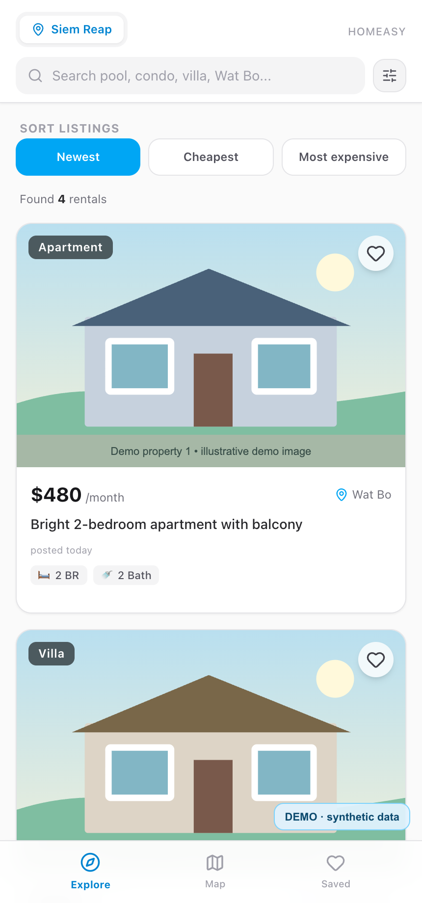
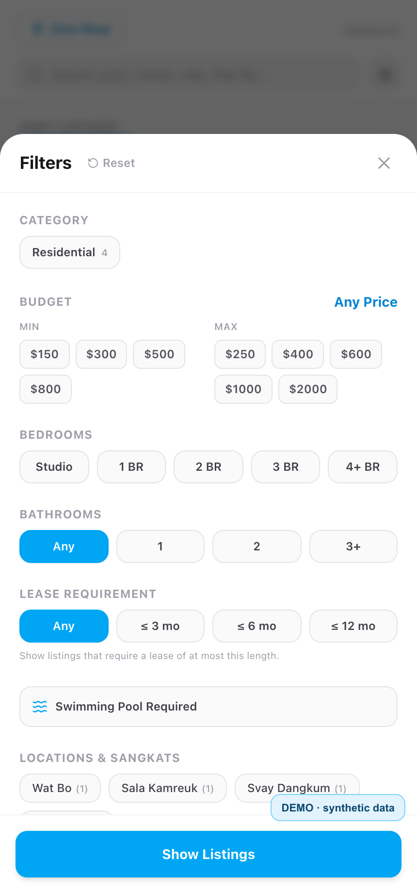

Websites & enquiries
Service pages and forms that send a customer enquiry into a working process.
Auto service website ↗I’m Ilia Veshtort. I build websites that capture enquiries, CRM tools, bots and data workflows — from requirements to launch and support. I previously supported corporate infrastructure for 800+ users.

01 / How I can help
Each service is backed by a working example. We define scope, timing and support around the actual task.
Service pages and forms that send a customer enquiry into a working process.
Auto service website ↗Enquiries, team roles, jobs, scheduling and payment records in one workspace.
Explore the CRM demo ↗Collecting and structuring data, duplicate detection, alerts and Telegram interfaces.
Explore Homeasy ↗After launch, we can agree on availability checks, certificates, updates, monitoring and alerts for you or your team.
02 / Selected work
A live business website and CRM, plus a personal prototype with data processing and a Telegram interface.
From a website enquiry to a CRM workflow
An enquiry from the live website appears in the CRM and triggers a Telegram alert. Director, manager and mechanic roles have different permissions; the team manages jobs, scheduling and payments.
A working rental-search prototype for Cambodia
The prototype collects listings, normalizes fields, detects duplicates and connects a bot with a Telegram mini app. It shows how I bring data sources, an API and an interface together.

03 / Experience
I supported an IT environment with 800+ users. That experience helps me plan for monitoring, updates and support after a product goes live.
In practice, the role covered systems administration and systems engineering duties.
Languages Russian — native · English — B1 · German — B1
Education Information Security, Moscow State Technical University of Civil Aviation (studies not completed)
04 / From brief to support
I define the expected result and scope, build and test the solution, then deploy it. When needed, I also monitor availability, maintain updates and help resolve issues after launch.
Business goal, user journeys, scope and constraints.
Milestones, data, access, integrations and failure points.
Build, test real workflows and fix issues.
Deploy, hand over the result, monitor and provide agreed support.
05 / Contact
Open to projects involving websites, internal tools, bots and automation, as well as suitable long-term roles. I work remotely and can discuss project details in writing in English or Russian.
Tell me what you need to build and what already exists. We can agree on a useful next step and working format.